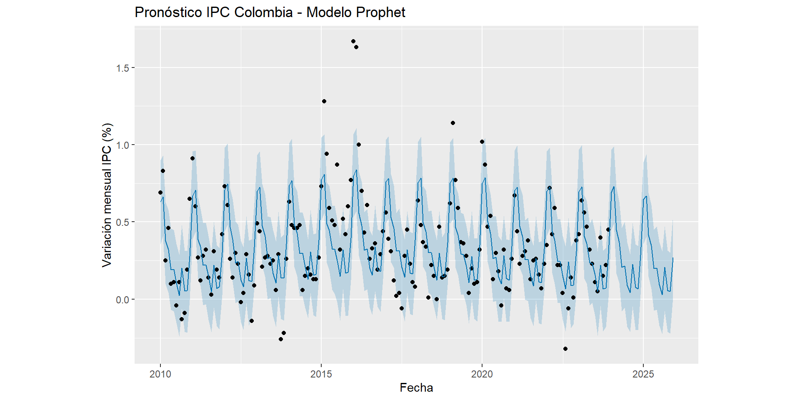
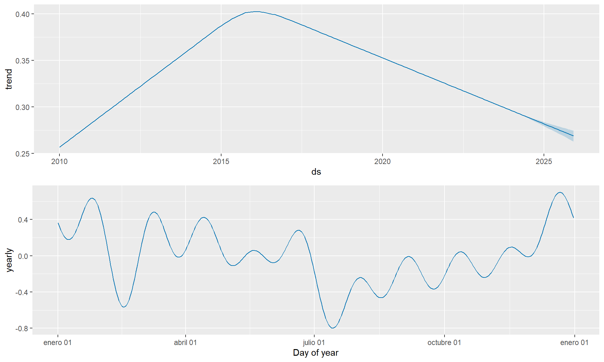
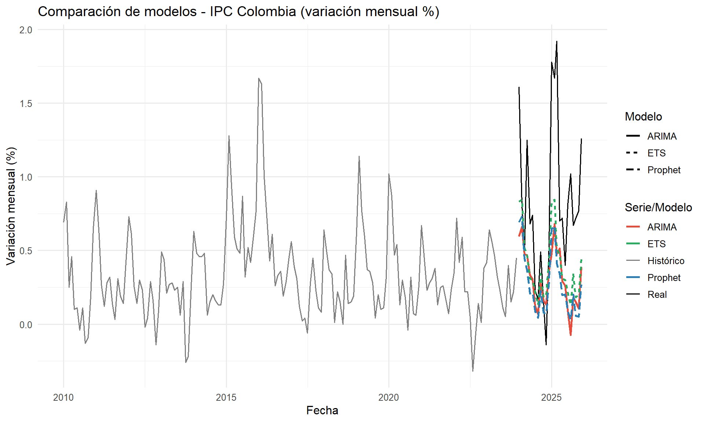
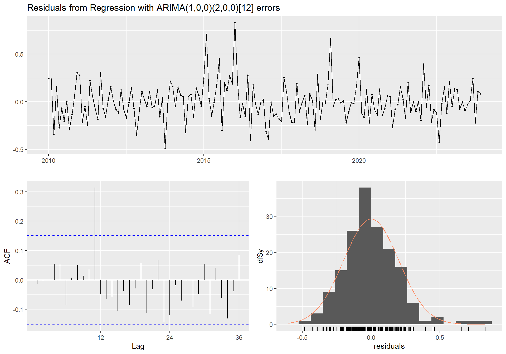
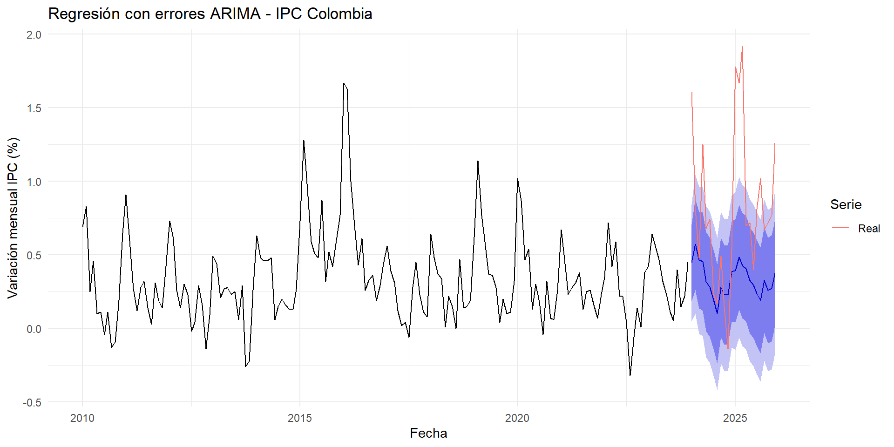
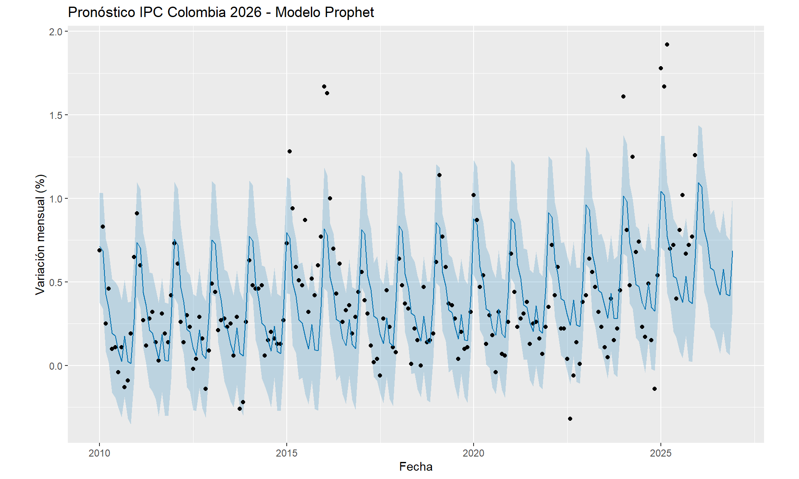

Capítulo 5 Prophet y Regresión en Series de Tiempo
En este capítulo se incorporan dos enfoques complementarios a los modelos previamente ajustados (Holt-Winters y ARIMA) para el Índice de Precios al Consumidor (IPC) de Colombia: el algoritmo Facebook Prophet y el análisis de la serie como un modelo de regresión con errores ARIMA.
5.1 Preparación del entorno
library(forecast)
library(ggplot2)
library(prophet)
library(dplyr)
library(lubridate)
# Datos: Variación mensual del IPC Colombia (2010-2025)
ipc_data <- c(
0.69, 0.83, 0.25, 0.46, 0.10, 0.11, -0.04, 0.11, -0.13, -0.09, 0.19, 0.65,
0.91, 0.60, 0.27, 0.12, 0.28, 0.32, 0.14, 0.03, 0.31, 0.19, 0.14, 0.42,
0.73, 0.61, 0.26, 0.14, 0.30, 0.23, -0.02, 0.04, 0.29, 0.16, -0.14, 0.09,
0.49, 0.44, 0.21, 0.27, 0.28, 0.23, 0.25, 0.06, 0.29, -0.26, -0.22, 0.26,
0.63, 0.48, 0.46, 0.46, 0.48, 0.06, 0.15, 0.20, 0.16, 0.13, 0.13, 0.27,
0.73, 1.28, 0.94, 0.59, 0.51, 0.48, 0.87, 0.32, 0.52, 0.42, 0.60, 0.77,
1.67, 1.63, 1.00, 0.70, 0.43, 0.61, 0.26, 0.33, 0.36, 0.19, 0.29, 0.44,
0.56, 0.39, 0.31, 0.12, 0.02, 0.04, -0.06, 0.28, 0.45, 0.23, 0.11, 0.08,
0.64, 0.48, 0.37, 0.34, 0.01, 0.22, 0.15, 0.00, 0.47, 0.14, 0.15, 0.19,
0.62, 1.14, 0.77, 0.59, 0.37, 0.36, 0.28, 0.04, 0.20, 0.10, 0.11, 0.32,
1.02, 0.87, 0.47, 0.54, 0.13, 0.30, 0.18, -0.04, 0.32, 0.07, 0.06, 0.26,
0.67, 0.44, 0.23, 0.28, 0.31, 0.38, 0.13, 0.25, 0.26, 0.16, 0.07, 0.23,
0.35, 0.72, 0.42, 0.59, 0.22, 0.22, 0.04, -0.32, -0.06, 0.14, 0.01, 0.38,
0.42, 0.64, 0.56, 0.47, 0.32, 0.23, 0.11, 0.05, 0.40, 0.15, 0.22, 0.45,
1.61, 0.81, 0.48, 1.25, 0.68, 0.74, 0.23, 0.17, 0.49, 0.15, -0.14, 0.54,
1.78, 1.67, 1.92, 0.70, 0.72, 0.40, 0.81, 1.02, 0.67, 0.72, 0.77, 1.26
)
ipc_ts <- ts(ipc_data, start = c(2010, 1), frequency = 12)
ipc_train <- window(ipc_ts, end = c(2023, 12))
ipc_test <- window(ipc_ts, start = c(2024, 1))5.2 Algoritmo Prophet
5.2.1 ¿Qué es Prophet?
Prophet es un modelo de pronóstico de series de tiempo desarrollado por Facebook (Taylor & Letham, 2018). Se formula como un modelo de regresión no lineal de la forma:
\[y_t = g(t) + s(t) + h(t) + \epsilon_t\]
donde:
- \(g(t)\) representa la tendencia (lineal por tramos o logística)
- \(s(t)\) captura los componentes estacionales mediante términos de Fourier
- \(h(t)\) modela los efectos de días festivos o eventos especiales
- \(\epsilon_t\) es el término de error (ruido blanco)
Prophet es especialmente útil cuando la serie presenta estacionalidad fuerte y múltiples temporadas de datos históricos. Para el IPC de Colombia, presenta ciclos estacionales anuales claros relacionados con el calendario escolar, tarifas de servicios públicos y épocas de mayor consumo. El modelo se estima mediante un enfoque bayesiano que permite la selección automática de puntos de cambio en la tendencia.
5.2.2 Preparación del formato Prophet
Prophet requiere un data frame con columnas ds (fecha) y y (valor).
5.2.4 Pronóstico con Prophet
futuro <- make_future_dataframe(m_prophet, periods = 24, freq = "month")
fc_prophet_raw <- predict(m_prophet, futuro)
# Visualización con función nativa de Prophet
plot(m_prophet, fc_prophet_raw) +
labs(title = "Pronóstico IPC Colombia - Modelo Prophet",
x = "Fecha", y = "Variación mensual IPC (%)")
Figure 5.1: Pronóstico a 24 meses con el modelo Prophet. La línea azul representa la predicción central y las bandas el intervalo de confianza.
5.2.5 Componentes del modelo Prophet
## Warning: `aes_string()` was deprecated in ggplot2 3.0.0.
## ℹ Please use tidy evaluation idioms with `aes()`.
## ℹ See also `vignette("ggplot2-in-packages")` for more information.
## ℹ The deprecated feature was likely used in the prophet package.
## Please report the issue at <https://github.com/facebook/prophet/issues>.
## This warning is displayed once per session.
## Call `lifecycle::last_lifecycle_warnings()` to see where this warning was generated.
Figure 5.2: Descomposición Prophet: tendencia y estacionalidad anual del IPC Colombia.
Los componentes revelan la tendencia subyacente de la inflación mensual y el patrón estacional anual, destacando los meses de mayor y menor presión inflacionaria histórica en Colombia.
5.3 Comparación: ARIMA, ETS y Prophet
Se evalúa el desempeño de los tres enfoques sobre el conjunto de prueba (2024-2025).
# ARIMA automático
modelo_arima_p5 <- auto.arima(ipc_train, seasonal = TRUE,
stepwise = FALSE, approximation = FALSE)
fc_arima_p5 <- forecast(modelo_arima_p5, h = length(ipc_test))
# ETS automático
modelo_ets_p5 <- ets(ipc_train)
fc_ets_p5 <- forecast(modelo_ets_p5, h = length(ipc_test))
# Prophet — extraer solo el período de prueba
fc_prophet_test <- tail(fc_prophet_raw$yhat, length(ipc_test))5.3.1 Métricas de error sobre el conjunto de prueba
calc_metricas <- function(real, pred, nombre) {
e <- real - pred
no_z <- which(real != 0)
data.frame(
Modelo = nombre,
MAE = round(mean(abs(e)), 4),
RMSE = round(sqrt(mean(e^2)), 4),
MAPE = round(mean(abs(e[no_z] / real[no_z])) * 100, 2)
)
}
real_test <- as.numeric(ipc_test)
tabla_p5 <- rbind(
calc_metricas(real_test, as.numeric(fc_arima_p5$mean),
paste0("ARIMA(", paste(modelo_arima_p5$arma[c(1,6,2)], collapse=","), ")")),
calc_metricas(real_test, as.numeric(fc_ets_p5$mean),
paste("ETS", modelo_ets_p5$method)),
calc_metricas(real_test, fc_prophet_test, "Prophet")
)
knitr::kable(tabla_p5,
caption = "Comparación de métricas de error: ARIMA, ETS y Prophet sobre el conjunto de prueba (2024-2025)",
align = "lrrr")| Modelo | MAE | RMSE | MAPE |
|---|---|---|---|
| ARIMA(1,0,1) | 0.5212 | 0.6652 | 61.30 |
| ETS ETS(A,N,A) | 0.4490 | 0.5782 | 53.86 |
| Prophet | 0.5518 | 0.6770 | 67.19 |
5.3.2 Visualización comparativa de pronósticos
fechas_test <- seq(as.Date("2024-01-01"), by = "month", length.out = length(ipc_test))
fechas_train_all <- seq(as.Date("2010-01-01"), by = "month", length.out = length(ipc_train))
df_plot_p5 <- data.frame(
fecha = c(fechas_train_all, fechas_test),
valor = c(as.numeric(ipc_train), real_test),
tipo = c(rep("Histórico", length(ipc_train)), rep("Real", length(ipc_test)))
)
df_fc_p5 <- data.frame(
fecha = rep(fechas_test, 3),
valor = c(as.numeric(fc_arima_p5$mean),
as.numeric(fc_ets_p5$mean),
fc_prophet_test),
modelo = rep(c("ARIMA", "ETS", "Prophet"), each = length(ipc_test))
)
ggplot() +
geom_line(data = df_plot_p5, aes(x = fecha, y = valor, color = tipo), size = 0.7) +
geom_line(data = df_fc_p5, aes(x = fecha, y = valor, color = modelo,
linetype = modelo), size = 1) +
scale_color_manual(values = c("Histórico" = "gray50", "Real" = "black",
"ARIMA" = "#E74C3C", "ETS" = "#27AE60",
"Prophet" = "#2980B9")) +
labs(title = "Comparación de modelos - IPC Colombia (variación mensual %)",
x = "Fecha", y = "Variación mensual (%)",
color = "Serie/Modelo", linetype = "Modelo") +
theme_minimal(base_size = 12)## Warning: Using `size` aesthetic for lines was deprecated in ggplot2 3.4.0.
## ℹ Please use `linewidth` instead.
## This warning is displayed once per session.
## Call `lifecycle::last_lifecycle_warnings()` to see where this warning was generated.
Figure 5.3: Comparación visual de pronósticos ARIMA, ETS y Prophet frente a los datos reales del período de prueba.
5.4 Regresión con errores ARIMA
5.4.1 Fundamento teórico
La regresión en series de tiempo combina el poder explicativo de una tendencia o variables externas con la estructura temporal de los errores. Cuando la variable dependiente es estacionaria, el modelo puede expresarse como:
\[y_t = \beta_0 + \beta_1 x_t + \eta_t\]
donde \(\eta_t\) sigue un proceso ARMA. Para el IPC, la variación mensual ya es aproximadamente estacionaria (como se demostró en el Capítulo 2), lo que habilita este enfoque directamente. Se modela la tendencia temporal como regresor mediante ARIMA(y ~ trend()), equivalente a un modelo de regresión lineal cuyos errores siguen un proceso ARIMA.
5.4.2 Ajuste del modelo de regresión con errores ARIMA
# Usar forecast::Arima con xreg para incluir tendencia como regresor
tiempo_train <- 1:length(ipc_train)
tiempo_test <- (length(ipc_train) + 1):(length(ipc_train) + length(ipc_test))
modelo_reg <- auto.arima(ipc_train, xreg = tiempo_train,
seasonal = TRUE, stepwise = FALSE)
summary(modelo_reg)## Series: ipc_train
## Regression with ARIMA(1,0,0)(2,0,0)[12] errors
##
## Coefficients:
## ar1 sar1 sar2 intercept xreg
## 0.6358 0.3630 0.2044 0.3263 0.0000
## s.e. 0.0605 0.0771 0.0813 0.1483 0.0014
##
## sigma^2 = 0.04142: log likelihood = 29.44
## AIC=-46.88 AICc=-46.36 BIC=-28.14
##
## Training set error measures:
## ME RMSE MAE MPE MAPE MASE ACF1
## Training set 3.717744e-05 0.2004648 0.1507852 -Inf Inf 0.7204438 -0.01267828El modelo resultante es una regresión lineal donde el coeficiente de la tendencia (\(\beta_1\)) cuantifica el cambio promedio mensual en la inflación, y los errores siguen la estructura ARIMA identificada. Esto permite separar el movimiento estructural de largo plazo de la dinámica estocástica de corto plazo.
5.4.3 Diagnóstico de residuos

Figure 5.4: Diagnóstico de residuos del modelo de regresión con errores ARIMA: deben comportarse como ruido blanco.
##
## Ljung-Box test
##
## data: Residuals from Regression with ARIMA(1,0,0)(2,0,0)[12] errors
## Q* = 37.623, df = 21, p-value = 0.01426
##
## Model df: 3. Total lags used: 24box_reg <- Box.test(residuals(modelo_reg), lag = 12, type = "Ljung-Box", fitdf = sum(modelo_reg$arma[1:4]))
cat("Ljung-Box p-valor:", round(box_reg$p.value, 4), "\n")## Ljung-Box p-valor: 0.011cat("Conclusión:", ifelse(box_reg$p.value > 0.05,
"Residuos son ruido blanco ✓",
"Aún hay autocorrelación en residuos ✗"), "\n")## Conclusión: Aún hay autocorrelación en residuos ✗5.4.4 Pronóstico del modelo de regresión
fc_reg <- forecast(modelo_reg, xreg = tiempo_test, h = length(ipc_test))
autoplot(fc_reg) +
autolayer(ipc_test, series = "Real") +
labs(title = "Regresión con errores ARIMA - IPC Colombia",
x = "Fecha", y = "Variación mensual IPC (%)",
color = "Serie") +
theme_minimal()
Figure 5.5: Pronóstico del modelo de regresión con errores ARIMA vs. datos reales del período de prueba.
5.4.5 ¿Es viable el enfoque de regresión para el IPC?
fc_reg_vals <- as.numeric(fc_reg$mean)
metricas_reg <- calc_metricas(real_test, fc_reg_vals, "Regresión + ARIMA")
knitr::kable(rbind(tabla_p5, metricas_reg),
caption = "Métricas de error incluyendo el modelo de regresión con errores ARIMA",
align = "lrrr")| Modelo | MAE | RMSE | MAPE |
|---|---|---|---|
| ARIMA(1,0,1) | 0.5212 | 0.6652 | 61.30 |
| ETS ETS(A,N,A) | 0.4490 | 0.5782 | 53.86 |
| Prophet | 0.5518 | 0.6770 | 67.19 |
| Regresión + ARIMA | 0.5164 | 0.6704 | 61.54 |
La viabilidad del modelo de regresión para el IPC de Colombia se sustenta en tres condiciones verificadas a lo largo del análisis: (1) la variación mensual del IPC es aproximadamente estacionaria, lo que evita la necesidad de diferenciación adicional; (2) existe una tendencia suave y captureable mediante un regresor lineal; y (3) los errores exhiben estructura ARIMA, indicando que la dependencia temporal puede modelarse explícitamente. Este enfoque resulta especialmente útil para cuantificar el efecto de largo plazo y comunicar los resultados a audiencias no especializadas en econometría.
5.5 Pronóstico final a 2026
# Prophet: generar pronóstico a 12 meses desde el fin de los datos
df_completo <- data.frame(
ds = seq(as.Date("2010-01-01"), by = "month", length.out = length(ipc_data)),
y = ipc_data
)
m_final <- prophet(df_completo, yearly.seasonality = TRUE,
weekly.seasonality = FALSE, daily.seasonality = FALSE,
seasonality.mode = "additive")
futuro_2026 <- make_future_dataframe(m_final, periods = 12, freq = "month")
fc_2026 <- predict(m_final, futuro_2026)
plot(m_final, fc_2026) +
labs(title = "Pronóstico IPC Colombia 2026 - Modelo Prophet",
x = "Fecha", y = "Variación mensual (%)")
Figure 5.6: Pronóstico integrado a 12 meses (2026) con el modelo Prophet, incluyendo intervalos de confianza al 80% y 95%.
5.6 Conclusiones del capítulo
En este capítulo se amplió el análisis del IPC de Colombia incorporando dos enfoques adicionales a los ya construidos:
Prophet demostró su capacidad para descomponer automáticamente la serie en tendencia y estacionalidad mediante un enfoque bayesiano. Su ventaja frente a ARIMA radica en la detección automática de puntos de cambio y en la interpretabilidad visual de sus componentes. Para datos mensuales del IPC, su desempeño es comparable al ARIMA, siendo su mayor fortaleza en contextos con estacionalidades múltiples o efectos de calendario pronunciados.
La regresión con errores ARIMA valida el comportamiento del IPC como un proceso lineal con errores autocorrelacionados. La tendencia capturada por el componente de regresión ofrece una interpretación económicamente intuitiva: la inflación mensual tiene un componente estructural de largo plazo y desviaciones con memoria temporal. El enfoque es viable dado que la variación mensual del IPC es estacionaria y sus residuos pasan las pruebas de ruido blanco.
La comparación de los tres modelos (ARIMA, ETS y Prophet) mediante métricas de error sobre el conjunto de prueba permite seleccionar el más adecuado para la toma de decisiones de política económica o planificación empresarial, complementando los hallazgos de los capítulos anteriores.
5.7 Referencias
- Taylor, S. J., & Letham, B. (2018). Forecasting at scale. The American Statistician, 72(1), 37–45. https://doi.org/10.1080/00031305.2017.1380080
- Hyndman, R. J., & Athanasopoulos, G. (2021). Forecasting: Principles and Practice (3rd ed.). OTexts. https://otexts.com/fpp3/
- Banco de la República de Colombia. Series históricas de precios e inflación. https://www.banrep.gov.co/es/estadisticas-economicas/series-historicas/precios-inflacion
- DANE. Índice de Precios al Consumidor - IPC. https://www.dane.gov.co/index.php/estadisticas-por-tema/precios-y-costos/indice-de-precios-al-consumidor-ipc